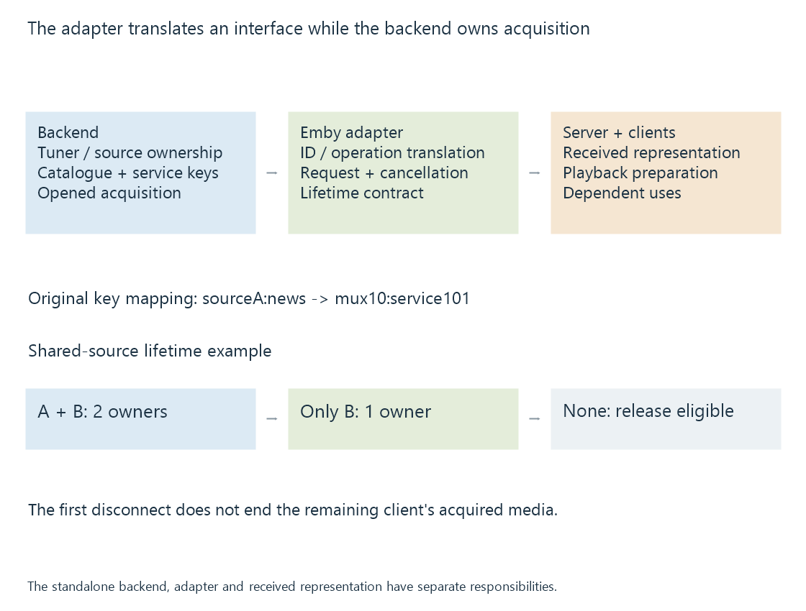

Live TV backend adapters
A Live TV backend adapter connects Emby to an external acquisition/service interface, translating source identities and operations while the backend retains its own hardware and resource responsibilities.
A Live TV backend adapter gives Emby a supported interface to another system that acquires and manages television services.
The adapter is not the RF receiver itself. It translates operations and identifiers across the boundary between Emby and a standalone backend.
Ownership is split across the route
An external backend can own tuner configuration, channel scans, service selection and finite acquisition resources. The adapter exposes the relevant catalogue and media operations in a form Emby can use.

Emby’s Live TV plugin documentation explicitly distinguishes the plugin from the standalone application it depends on. Adding an adapter does not necessarily create or configure that backend.
The actual plugin/backend version pair must expose the operations needed for the selected service.
A channel label needs a stable backend key
Use an original translation exercise:
{
"embyChannelKey": "sourceA:news",
"displayName": "Harbour News",
"backendServiceKey": "mux10:service101",
"openOperation": "open-selected-service"
}
The adapter uses the backend key to request the service. Changing only the displayed name does not need to change that key.
The object is a readable teaching model, not an Emby API payload or a captured backend report.
An adapter that mistakenly requests another key can supply the wrong programme even while the catalogue and network connection both work. Service identifiers develops the underlying identity scope.
Catalog access and media access can fail independently
The backend can return channel metadata while a later request lacks a free compatible tuner, current service data or required supported access.
A successful catalogue call does not make these later conditions true. Likewise, a backend stream can be usable while a chosen Emby client needs additional media preparation.
A useful stage distinction is:
| Observation | Boundary established |
|---|---|
| Catalogue returned | Inventory/identity interface |
| Acquisition allocated | Backend resource selection |
| Usable media begins arriving | Selected-service production/delivery |
| Client output advances | Later server/client presentation |
This ordering gives an error a position rather than treating every failure as a missing plugin.
A shared acquisition needs explicit lifetime rules
In an original sharing model, viewers A and B both use one backend acquisition. Its consumer count is two.
A closing its request reduces the count to one. The acquisition cannot be released solely because A ended; B still needs it. When B ends, the count becomes zero and the model can release the resource.
If the adapter opens an independent acquisition for each viewer, its count and resource use have a different relationship. A shared display name does not prove shared acquisition.
Cancellation, disconnects and retries also need to preserve the backend’s ownership semantics. Otherwise a resource can remain held after its intended consumer has gone away or be released while another still needs it.
Tuner concurrency develops the demand side of this relationship.
The backend can perform preparation before Emby sees the stream
A backend might expose a full multiplex, a selected encoded programme or an already prepared representation. The adapter contract should identify which one it supplies.
If preparation has already happened upstream, a later Emby “direct” delivery choice describes that received representation. It does not imply the original broadcast went through no earlier selection or conversion.